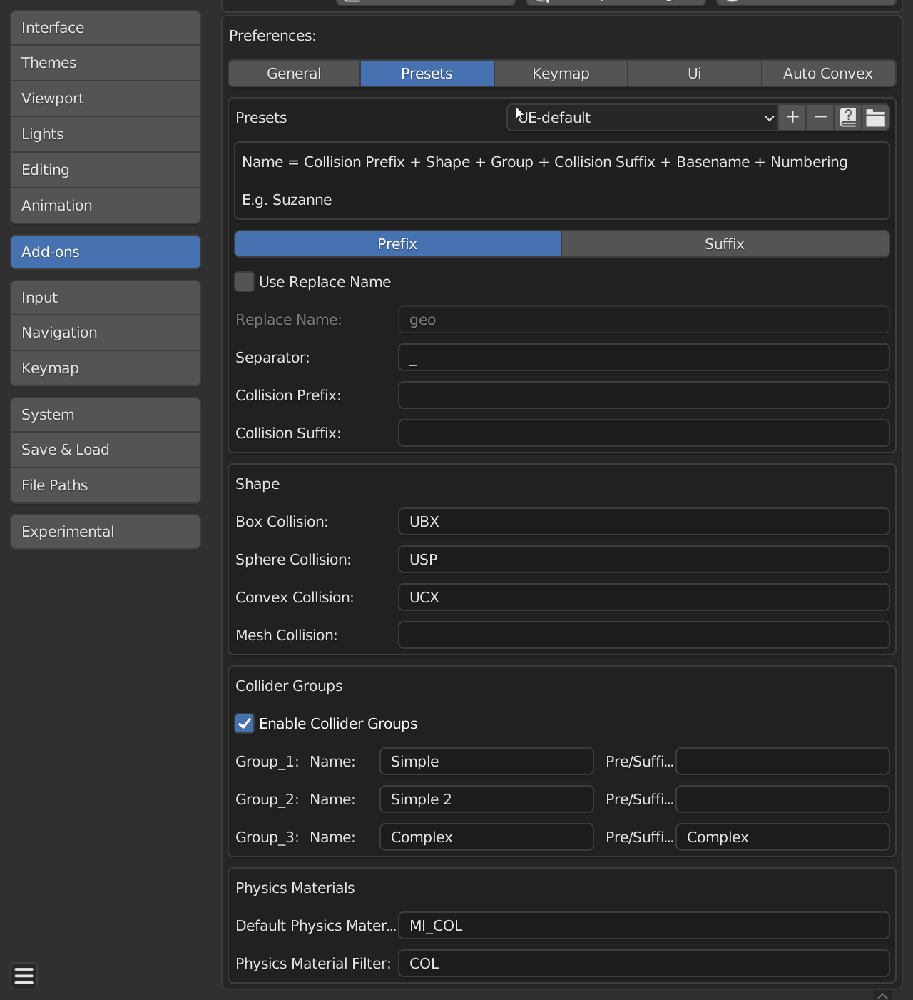

The Collider Tools addon covers only the blender side of creating collisions. It does not provide any special importers for 3rd party game engines.
Naming Presets
Collider Tools supports naming presets saved as simple .py files on the file system. You can save naming settings, quickly toggle them if for working on different projects or engines and share the preset files with colleagues. Collider Tools 1.1 bring a lot of improvements to the prefab handling. It's now shipped with 2 presets:
- UE-default (read-only)
- Unity (read-only)
Presets can be created and deleted. You can change a preset by creating a preset with the same name. 
Distributing Presets
The easiest way to distribute the presets is to share the preset '.py' files. You can open the preset directory by pressing the folder icon in either the side panel or the preferences (see gifs above). You can also find the files under following path (Windows):
Windows: C:\Users\ [ Use Name ] \AppData\Roaming\Blender Foundation\Blender\ [ Blender Version ] \scripts\presets\collider_tools
The presets files are very simple, this is the example of the UE.py file:
import bpy
prefs = bpy.context.preferences.addons['collider_tools'].preferences
prefs.naming_position = 'PREFIX'
prefs.replace_name = False
prefs.obj_basename = 'geo'
prefs.separator = '_'
prefs.collision_string_prefix = ''
prefs.collision_string_suffix = ''
prefs.box_shape = 'UBX'
prefs.sphere_shape = 'USP'
prefs.convex_shape = 'UCX'
prefs.mesh_shape = ''
prefs.collider_groups_enabled = True
prefs.user_group_01 = ''
prefs.user_group_02 = ''
prefs.user_group_03 = 'Complex'
prefs.user_group_01_name = 'Simple'
prefs.user_group_02_name = 'Simple 2'
prefs.user_group_03_name = 'Complex'
prefs.physics_material_name = 'MI_COL'
prefs.physics_material_filter = 'COL'
Other
The naming options should allow the Collider Tools addon to be used with a large variety of engines and pipelines. Feel free to contact me if you need help incorporating the addon in your pipeline and proprietary engine.
Presets for Collider Tools (before 1.1)
You can down the preset files for older Collider Tools versions from here.